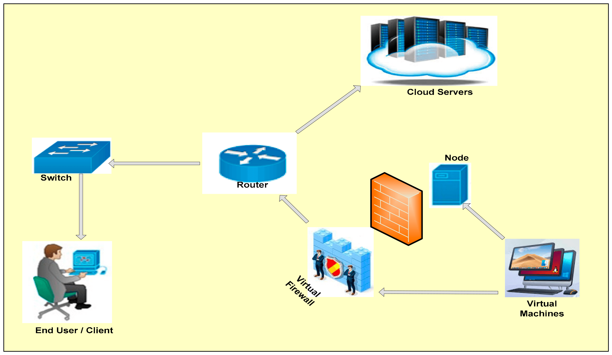

Electronic Healthcare Solution
This project involves creating a web application that
provides a secure and convenient platform for patients
and healthcare providers to access and share medical
records, prescriptions, appointments, and other
health-related information. You will need to use
web development technologies such as HTML, CSS,
JavaScript, PHP, MySQL, and encryption algorithms
to build the front-end and back-end of the application.
You will also need to implement security features
such as authentication, authorization, firewall, and
encryption to protect the data from unauthorized access.

Online Trading Platform with High Processing Speed
This project involves creating a web application that allows
users to trade stocks, currencies, commodities, and other financial
instruments online. You will need to use web development
technologies such as HTML, CSS, JavaScript, React, Node.js,
MongoDB, and WebSocket to build the front-end and back-end
of the application. You will also need to use APIs to fetch
real-time data from various sources and display them on the
web page.
You will also need to implement features such as
user registration, login, dashboard, charts, order placement,
order execution, order history, and notifications.
This project will help you learn how to create a
fast and responsive web application that handles
real-time data and provides a user-friendly interface1.
Online Travel Platform with Easy-to-manage Inquiries: This project involves creating a web application that allows users to search, compare, and book travel services such as flights, hotels, car rentals, and tours online. You will need to use web development technologies such as HTML, CSS, JavaScript, Angular, Express, MySQL, and RESTful APIs to build the front-end and back-end of the application. You will also need to use APIs to fetch data from various travel providers and display them on the web page. You will also need to implement features such as user registration, login, profile, search, filter, sort, booking, payment, confirmation, and feedback..